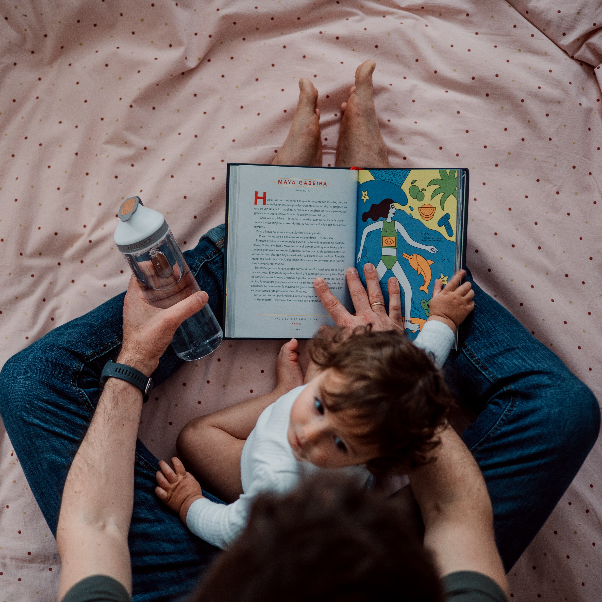

What is parenting? Why does parenting matter?
Many parents ask themselves, “How am I going to raise my children?” and “What am I supposed to do as a parent?” This article will answer both questions by explaining what parenting is and why it is so important.
I am a mother And I'm proud to be one of many who have taken on this important role. Parenting isn't for everyone, but it's a bigger responsibility than simply raising a child. This includes taking care of yourself and balancing your needs with those of your child.
So why is education necessary? And why should I have it?
These questions are important because they can help you decide if parenting is right for you, no matter what life stage or situation you are in now.
Why does parenting matter?
The number one reason parenting is important is that you are the most important person in your child's life. You are their first teacher and main caretaker, and you will guide them through life as they grow.
It's not just about giving advice or guidance, it's about helping you understand how things work and how you can apply that knowledge to make your own choices and avoid problems later.
Parenting 7-year-olds
7 year olds become more independent. They learn to make their own decisions and take responsibility, but they also need adult guidance. This can become an issue as your children grow up, especially as the two of you go through different stages of life together.
It's important to be a good role model for your kids, but don't forget yourself! Your job is not only to teach them how to behave. It is also about learning to deal with them as they become more independent and mature.
Parenting 8-year-olds
Raising 8-year-old girls and boys is not the same as raising toddlers. Both are independent and confident, but still need supervision and guidance. Thinking skills are beginning to develop, but may need help with reading or math homework.
Parents can set limits on behavior (e.g., don't whine), help them understand how their behavior affects others (e.g., "Please don't push my sister"), and learn new skills (e.g., how to ride a bike). ) to guide your child's development. bike), modeling appropriate behavior for themselves, so that children know what is expected of them when they are around adults or siblings who are not yet young.

Parenting 9-year-olds
Raising a 9-year-old is about teaching them to be independent. They are still young enough to enjoy playing with their parents, but they need guidance to understand what it means to take care of themselves. This can be done by helping them learn about personal hygiene and self-care, and providing information about healthy eating and exercise that will help them stay healthy throughout their lives.
9-year-olds also have many questions about life outside the home. They want more than just a routine from their mom or dad. They want to spend time with other people too! As parents, we need to involve our children in decisions that affect their lives, such as whether they are allowed to go out after school.
Also, when something sadder than usual happens at school or at home (such as the loss of a dear friend), our children can immediately notice these changes and discuss everything together to help deal with the situation.”
Parenting 10-year-olds
10-year-olds are confused and often go through difficult times. They are still figuring out who they are, what their interests are, and their place in the world around them.
It can be difficult for parents to understand why their child behaves sometimes (or constantly), but it is important to remember that children are still learning how to interact with people and make their own decisions.
Also, raising a 10-year-old can be especially challenging, but don't worry! You are not alone in this struggle. Many parents have found over time which method works best for their particular situation.

Parenting 11-year-olds
Parents of 11-year-olds should prepare their children to become more independent. They are already starting to think about their future and what they want from life.
However, this does not mean that guidance and control are not needed from time to time. It is also important for parents to encourage fun activities such as sports or music lessons so that children can develop new interests while spending time with their families.
Parents know how challenging it can be to raise a big kid. But parents should always remember that it's never too late!
Parenting 12-year-olds
The first thing to know about 12-year-olds is that they are old enough to be very independent, but they still need parental guidance and support. They can be stubborn and rebellious, and even more competitive than younger children.
At this age, your child can start thinking about the future. whether you want to go home after school; Where do you want your life story to be written (book? movie? or both?
). You may have heard of Hunger Games, but don't worry. Your son will not be subjected to dangerous training yet!
Parenting 13-year-olds
Being a parent to a 13-year-old is hard work. They are more independent than before and may not want you all the time. If you are stressed about it, it will affect your relationship with that person (and his friends).
When I was 12 my parents wouldn't let me go anywhere without them. My mother used to say:
“As an adult, a lot of things about parenting have changed over time since I graduated from college and went on field trips to work with kids. Act. Our children's lives that we as parents should have!
Parenting styles that shape the child

I want to help raise your children to honor God and empower them to become confident, kind, and generous adults.
When I was 12 my parents wouldn't let me go anywhere without them. My mother used to say:
“As an adult, a lot of things about parenting have changed over time since I graduated from college and went on field trips to work with kids. Act. Our children's lives that we as parents should have!
Here are 4 common types of parenting types.
Authoritarian Parenting
Authoritarian parenting is the most common parenting style in the United States.
It is characterized by high parental control, which means that parents always take responsibility for their children and make all decisions.
This can include everything from limiting the amount of time your child can watch TV or play video games to telling them what they can (or don't) wear every day.
The authoritarian parenting style is characterized by high expectations and control on the children and low warmth or positive reinforcement.
This parenting style is associated with low self-esteem, poor social skills, higher aggression and antisocial behavior, lower academic performance, higher levels of depression and lower school satisfaction.
This type of parenting style is based on the belief that children are born bad and need to be controlled by parents—which may sound harsh, but it’s not actually uncommon!
Many psychologists believe that authoritarian parents bring out their worst qualities as much as they encourage their best ones. In other words: these types of parents tend to raise self-centered people who feel like they deserve whatever they want because they’re so perfect!
Authoritative Parenting
Authoritative parenting is a more effective parenting style than other parenting styles. Children are born with trust in adults, and it is based on the belief that parents should be firm, kind and fair.
Authoritative parents do not limit their children's activities or demand attention because they think they are too young or too old.
This parenting style is associated with higher academic achievement, self-esteem and social skills, as well as a lower risk of substance use, depression and anxiety disorders.
You don't even punish your children for every little mistake they make, no matter how big or small!
Instead of getting angry at your child for making an honest mistake (like falling off the bike), an authoritative parent will help your child learn from them so they don't make the same mistake in the future. This approach teaches children self-discipline, not punishment over time!
Permissive Parenting
Permissive parenting is a parenting style in which parents allow their children to do whatever they want without imposing any rules or standards of behavior. Permissive parents are not demanding, but they are not overbearing either.
These parents find it difficult to say no to their children or to follow house rules.
This parenting style is associated with impulsive behavior and lack of self-regulation, and can lead to eating disorders, for example. Children of permissive parents also show higher levels of aggression than other groups.
Permissive parenting has its roots in the early 20th century and was popularized by the psychologist John Bowlby. He writes about this in his book Childhood: A Study in Human Addiction.
It is based on the idea that children need freedom from restrictions so that they can develop their own identities and freely explore their surroundings without fear or worry about what will happen next.
Conclusion
The point here is that the way parents interact with their children has a significant impact on the type of person they grow up to be. It's easy to assume that all parenting styles are equally harmful, but research has shown the opposite.
For example, one study found that authoritarian upbringings resulted in fewer positive behaviors and higher aggression than authoritarian upbringings (Dodge et al., 2008).
In addition, indulgent parents tend to have more severe behavioral problems in their children (Karno et al., 2003), whereas inattentive parents tend to be more risk averse because they have less control over their children's lives. . or unsupervised drinking at home (Powell et al., 2004; Dodge et al., 2009).
Being a parent is hard work, but it can also be rewarding and rewarding. The most important thing is to do your best and enjoy the process.
Be patient, kind and caring, but tough when needed. And, as we explored in this article, there are different parenting styles that can help shape your child's development into adulthood.
In some cases, these styles can seem extreme. At other times, they are rather gentle with children. Others, however, fall somewhere between these two extremes.
Time Is:
[Copyright Made by Saim Ali]
Website Include All
Projects & Work Highlights